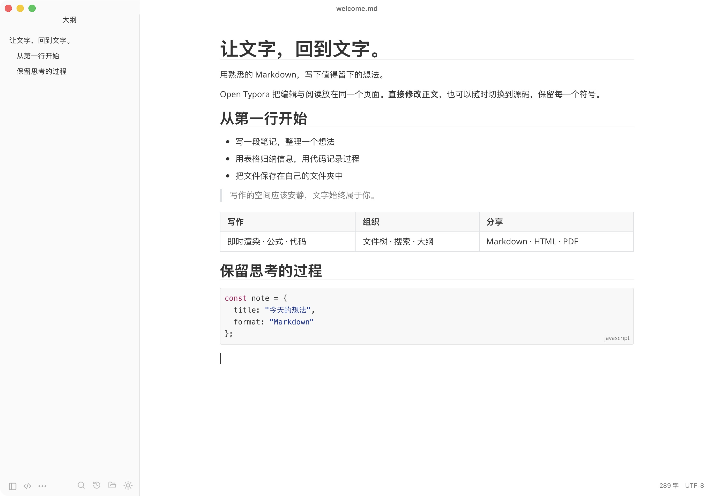

<!doctype html>
<html lang="en">
<meta charset="utf-8">
<title>Open Typora · Product image</title>
<style>
*{box-sizing:border-box}html,body{margin:0;width:1800px;height:1160px;overflow:hidden}body{font-family:-apple-system,BlinkMacSystemFont,"Helvetica Neue","PingFang SC",sans-serif;color:#243247;background:#e9edf0}.canvas{width:1800px;height:1160px;position:relative;padding:65px 112px}.brand{display:flex;align-items:center;gap:14px;font-size:23px;font-weight:600;letter-spacing:-.5px}.brand img{width:48px;height:48px}.platform{position:absolute;right:112px;top:86px;color:#5f6c7a;font-size:18px;letter-spacing:1px}.title{font-size:76px;line-height:1.1;letter-spacing:-3px;font-weight:650;margin:42px 0 16px}.subtitle{margin:0;color:#5e6c7c;font-size:24px;line-height:1.5}.window{position:absolute;left:142px;top:326px;width:1516px;height:742px;border-radius:16px;overflow:hidden;background:#fff;box-shadow:0 22px 54px #24324722,0 0 0 1px #24324712}.window img{display:block;width:100%;height:auto}.footer{position:absolute;bottom:36px;left:112px;color:#667485;font-size:17px;letter-spacing:.2px}.footer-right{left:auto;right:112px}.zh .title{font-size:75px;letter-spacing:1px;font-weight:600}
</style>
<main class="canvas">
  <div class="brand">Open Typora</div>
  <div class="platform">macOS · APPLE SILICON</div>
  <h1 class="title">Your words. Your files.</h1>
  <p class="subtitle">Live Markdown editing, in a space made for writing.</p>
  <div class="window"></div>
  <div class="footer">Local files. Live editing. Open source.</div>
  <div class="footer footer-right">open-typora</div>
</main>
<script>
if(new URLSearchParams(location.search).get('lang')==='zh'){
 document.documentElement.lang='zh-CN';document.body.classList.add('zh');
 document.querySelector('.title').textContent='让文字，回到文字。';
 document.querySelector('.subtitle').textContent='直接编辑 Markdown 正文，让写作自然发生。';
 document.querySelector('.footer').textContent='本地文件 · 即时编辑 · 开源';
}
</script>
</html>
